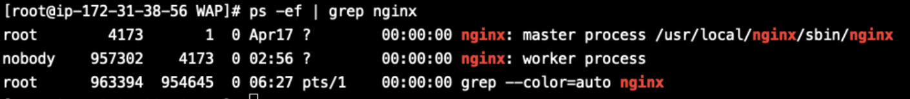
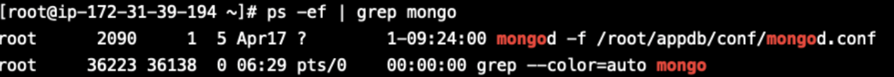
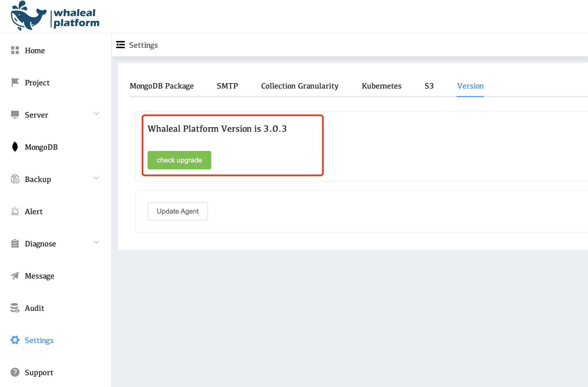

Upgrade Version
The WAP platform will regularly release new versions to update problems discovered therein and add new functions.
When there is a new version that can be updated, you can follow the following steps to upgrade the WAP platform version.
Upgrade Version on Premise
Version upgrade steps
pre-conditions
Events
Ensure that there are no event group operations currently, and if there are, wait for the event group to complete or manually terminate the event group.
Event group confirmation currently being performed:

Event group terminated:

Find running event groups in all managed clusters and terminate them.
Backup
Ensure that there are no backup tasks currently operating, and if there are, wait for the backup task to complete or manually close the backup job.
Old backup policies need to be deleted before starting backup for new versions.
Confirm whether there are any backup tasks in progress:

Terminate backup task
- Confirm the server associated with the backup task
- Terminate backup task
- Verify if there are any backup tasks running


- Turn off backup policy

other considerations
Ensure that the current wap java service is running without abnormalities
Command: jps -m or ps -ef| grep java

There are 4 java processes launched by the wap service, and the process names are:
- ops-gateway-1.0.0.jar
- ops-server-web-1.0.0.jar
- data-collection-api-1.0.0.jar
- nacos-server.jar
Confirm that all processes are alive
NGINX Service:
Commands: ps -ef | grep nginx

AppDB Service:
Commands:ps -ef | grep mongo

Confirm that the MongoDB process is alive.
AppDB update operation
Update data operations:
-
Connect to a MongoDB cluster
mongo "mongodb://{AppdbHost:port}" -
Authentication information
use admin
db.auth(“user”,“password”)
- Update statement (important, failure to update may cause Agent loss)
use whale eal db.ec2Limit.remove({}) db.ec2Limit.updateOne( { "_id": "whaleal" }, { $set: { "id": "whaleal", "createTime": NumberLong("1721011655140"), "updateTime": NumberLong("1721011655140"), "msg": "Do not modify this collection data", "limit": "BzqOKsP3/SzdilRynXjFwg==" } }, { upsert: true } );
Whaleal Platform Updates
Make sure the prerequisites are correct and then perform the following actions:
- Terminate current Java process
Termination of WAP-related services
ps -ef| grep java
- Confirm to close the current Java process
ps -ef| grep java
- Backup wap startup script
cp /opt/WAP/start.sh /opt
- Backup old wap platform service media packages
mv /opt/WAP /opt/WAP.bk. {datetime}
- Download or provide wap platform server installation package
WAP.tar.gz
- Extract the compressed package to the specified file path
tar -zxvf WAP.tar.gz -C /opt/
- Modify the startup script
cd /opt/WAP
vi start.sh
Modify the external access IP and appdb connection (check the startup script backed up in step 3)

- Launch wap services
sh start.sh
- View the service startup process
jps -m or ps -ef| grep java
There are 4 java processes launched by the wap service:
- ops-gateway-1.0.0.jar
- ops-server-web-1.0.0.jar
- data-collection-api-1.0.0.jar
- nacos-server.jar
ps -ef | grep nginx
Agent update
Before updating the Agent, confirm that the jdk version on all the servers where the Agent is located is 11.
App Database Updates
Automatically update agent services.
- Find the whal-token value on the WAP platform

- Record platform URL:8080

- Calling interfaces on WAP platform
curl -H whaleal-token:"whaleal_token" http://url:8080/api/server/agent/updateAgentJar
Demo
curl -H whaleal-token:"eyJhbGciOiJIUzUxMiIsInppcCI6IkdaSVAifQ.H4sIAAAAAAAAAKtWKi5NUrJS8g8I1vV19XVyDVLSUUqtKFCyMjQ3tLQ0MDazMNdRSkxOzi_NKwGqS0zJzcwDKslMQeIU5eekInGLE3NASkuCkzOrEktdwp1cDTPNs5OUagF3hac5bQAAAA.qXP4lIv1gJlJnJJDP4yy0TUetHp6jIMfBY2xRCwiJkKeq-9IaO_kRw0-mKRVg1X0dAer3izHaQV1IrbYosYX9w" http://54.87.119.179:8080/api/server/agent/updateAgentJar
MongoDB production server update
Consistent with the way App Database updates the Agent.
Check whether the EC2 host and MongoDB cluster status are normal after the update.

Version fallback
Whaleal Platform fallback
- Delete newly downloaded media pack
rm -rf /opt/WAP
- Terminate the wap service process
ps -ef| grep java
Termination of WAP-related services
- Update old wap service media pack
mv /opt/WAP /opt/WAP.bk. {datetime} /opt/WAP
- Start the wap service process
cd /opt/WAP
sh start.sh
- View the service startup process
jps -m or ps -ef| grep java

There are 4 java processes launched by the wap service, and the process names are:
-
ops-gateway-1.0.0.jar
-
ops-server-web-1.0.0.jar
-
data-collection-api-1.0.0.jar
-
nacos-server.jar
ps -ef| grep nginx

Agent fallback (backward compatible, no fallback)
- Delete new agent media package
rm -rf/data/agent/agent-collection-1.0.0.jar
- Start old agent service
mv agent-collection-1.0.0.jar.bk. {datetime} agent-collection-1.0.0.jar
- Launch old version of agent service
systemctl restart whaleal_agent
- View the agent process
ps -ef| grep agent

App Database rollback
- Connect to a MongoDB cluster
mongo "mongodb://{AppdbHost:port}"
- authentication information
use admin
db.auth(“user”,“password”)
- UPDATE statement
use whaleal db.ec2Limit.remove({})
Upgrade Version on Marketplace
- Use the Setting tab of the WAP page to find the content of the Version.

-
Check if a new version is available by clicking check upgrade.
-
Click Update to update to the new version.
-
Click Update Agent to update to the latest version of Agent.